Replacing the Torque Tube and Spline Shaft Assembly
This topic includes information about how to replace the Z-drive torque tube and spline shift assembly on the reagent storage module (RSM).
Safety Reminder
Servicing the DxI 9000 instrument involves potential risks for pinch and puncture, electrical shock, and exposure to hazardous materials. You must mitigate these risks by taking appropriate countermeasures. See Safety for more information.
| Table of Contents |
|---|
| Illustrations |
| Recommended Tools |
| Replacing the Z-Drive Torque Tube and Spline Shaft Assembly |
| Alignments |
| Verification |
Illustrations
The following illustrations show the components you will work with in this procedure.


| # | Component | Description and Function |
|---|---|---|
| 4 | Pipettor Nest | Location for nest to be pipetted from |
| 5 | Onload Tray | Ingests packs into and out of RSM |
| 6 | Waste Door Air Cylinder | Opens the waste door |
| 7 | Waste Door | Opens to discard packs into the solid waste bin |
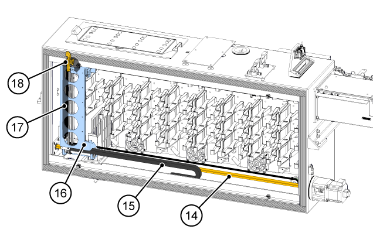
| 14 | RSM Z-drive torque tube and spline shaft assembly |
| 15 | X-axis cable guide |
| 16 | Z-gantry/gripper assembly (a.k.a. gripper carriage) |
| 17 | Z-axis cable guide |
| 18 | RSM Z-idler/tensioner assembly |


| # | Component | Description and Function |
|---|---|---|
| 8 | Linear rail/truck | Provides Z support for gripper/Z gantry |
| 9 | Z gantry | Provides Z support for gripper on linear rail |
| 10 | Z tensioner | Auto tensions Z drive belt |
| 11 | Gripper | Pick and place packs |
| 12 | Torque tube / spline shaft | Drive Z belt for Z gripper gantry |
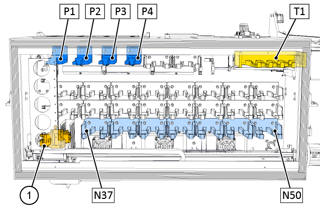
| P1 - P4 | Pipettor positions 1 - 4 |
| T1 | Tray 1 position |
| N37 | Nest 37 position |
| N50 | Nest 50 position |
| 1 | Gripper home position |
Recommended Tools
- 2.5mm hex driver (for M3 screws)
- 3mm hex driver (for M4 screws)
- 4mm hex driver (for M5 screws)
Note: Use an extra-long driver for ease of use.
Replacing the Z-Drive Torque Tube and Spline Shaft Assembly
- Prepare the reagent storage module (RSM) for removal. See Step 2: Remove Covers, Doors, and Drawers for more information.
- Disconnect the pneumatic tubing to the RSM. See Step 3: Disconnect the Pneumatic Tubing to the RSM for more information.
- Disconnect the cables to the RSM. See Step 4: Disconnect the Cables to the RSM for more information.
- Remove the waste bin container and replace the bio-bag.
- Remove the drawer assembly from the instrument.
- Remove the two screws that hold the solid waste intermediate tray in place.

- Pull and slide the tray on the rails to remove it. Place the tray in the new bio-bag in the waste bin.
Note: You must first remove the solid waste intermediate tray so that when you remove the RSM you have enough clearance for the RSM waste door assembly.
- Release the RSM subsystem from the instrument chassis. See Step 5: Remove the RSM Subsystem from the Instrument Chassis for more information.
- Slide and center the gripper carriage on the shafts.
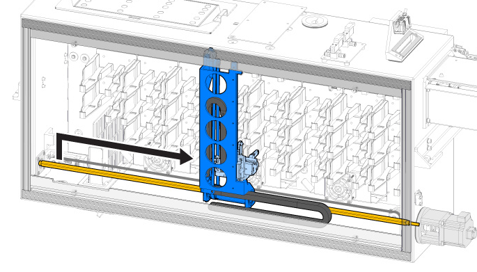
- Grasp the gripper carriage with both hands, firmly push down to remove it from the upper guide shaft bushing, and pull the top of the gripper carriage out from the RSM.
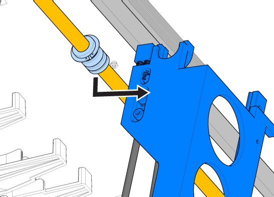
- Remove the Z-axis motor assembly.
- Disconnect the wiring to the motor assembly.
- Remove the internal retaining ring from its housing.
- Remove the four bolts with washers that mount the motor assembly to the frame.
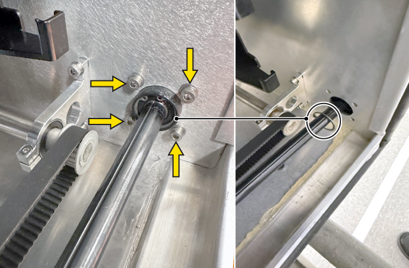
- Loosen, but do not remove, the bolt inside the coupler.
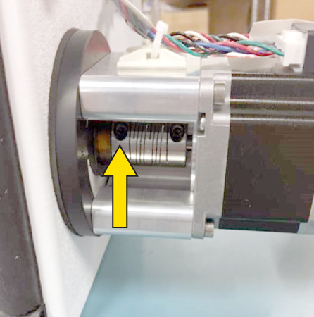
- Remove the motor assembly.
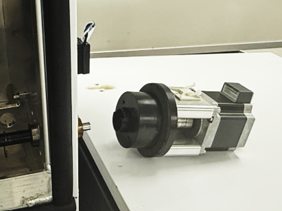
- Gently pull the shaft from the bearing.
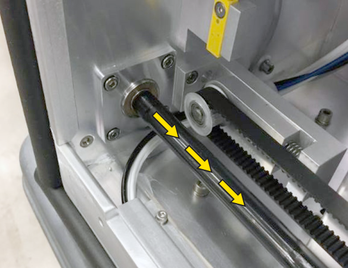
- Loosen the fasteners that hold the torque tube inside the gripper carriage.
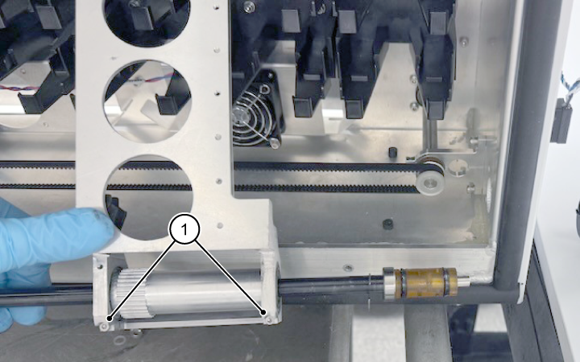
1 Torque tube fasteners - Secure the gripper carriage in its current position so that it will not move when you insert the new torque tube and spline shaft assembly.
- Remove the torque tube and spline shaft assembly from the gripper carriage.
- Unpack the new torque tube and spline shaft assembly.
Note: During unpacking and installation, to avoid losing bearings and having to replace the entire assembly, the torque tube must always remain fully seated on the spline shaft.
- Gently insert the new torque tube and spline shaft assembly through the gripper carriage and through the loop of the grooved drive belt.
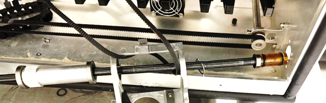
- Be sure the ends of the torque tube are flush with the gripper carriage.
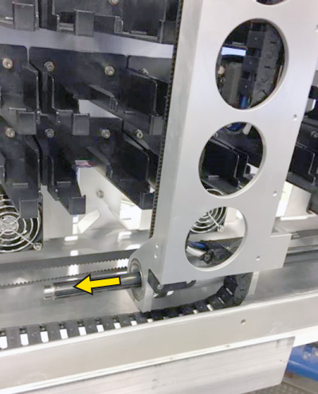
- Tighten the fasteners that hold the torque tube inside the gripper carriage.
- Route the belt over the tensioner and allow the springs to fully extend and apply tension to the belt.
- Tighten the tensioner bolts.
- Be sure the torque tube, the grooved drive belt, and the tensioner rotate freely.
- Attach the grooved drive belt to the gripper carriage.
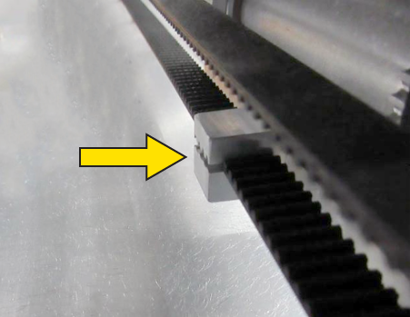
- Insert the shaft into the bearing.
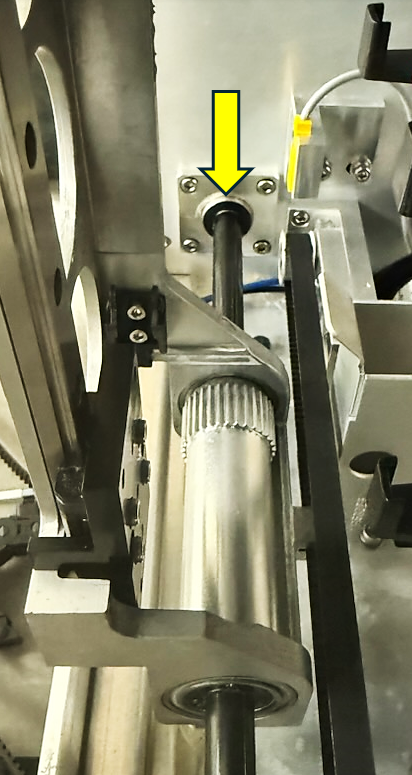
- Use type 2 lithium grease to lubricate the coupler seals on the shaft.
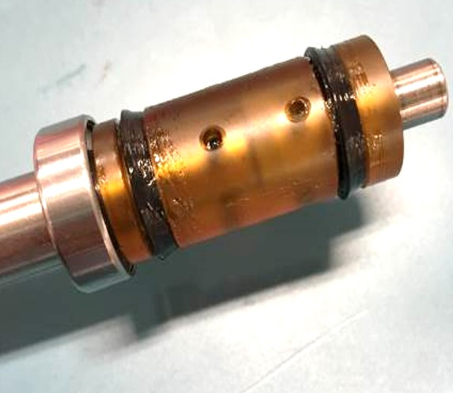
- Insert the shaft into the motor assembly. The pin on the end of the shaft should engage the flexible coupling on the motor assembly.
- Tighten the four bolts with washers that mount the motor assembly to the frame.
- Insert the internal retaining ring into its housing.
- Tighten the bolt inside the coupler.
- Reposition the gripper carriage onto the upper guide shaft bushing.
Note: Be sure the bushing is accurately positioned within the gripper carriage saddle and that the saddle is properly seated.
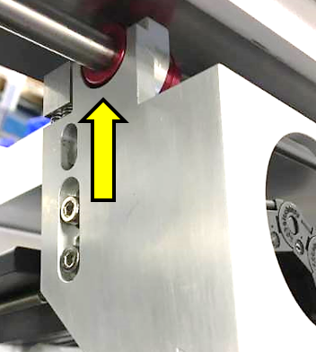
- Use type 2 lithium grease to lubricate the shaft.
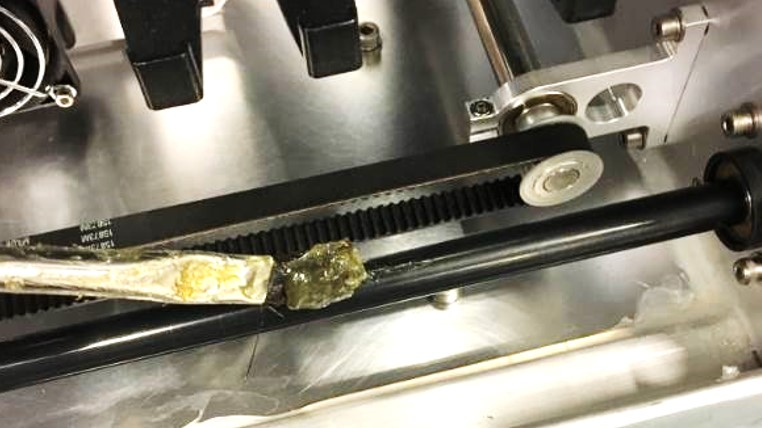
- Move the gripper carriage back and forth to distribute the grease.
- Wipe any excess grease from the torque tube seals and from the shaft.
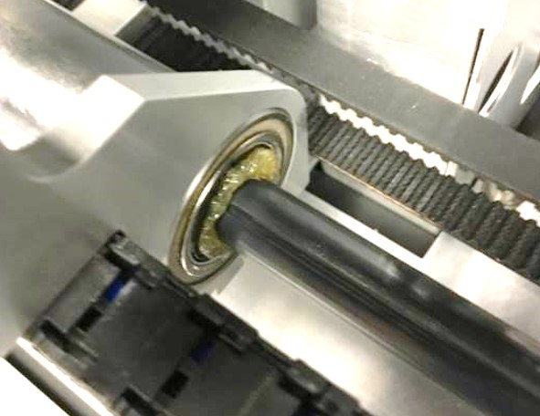
- Reconnect the wiring to the motor assembly and secure the wiring.
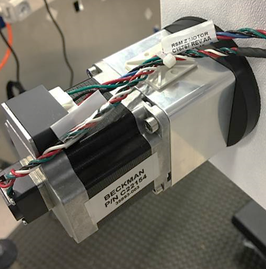
- Move the gripper carriage and gripper to the home position in the lower left corner of the RSM.
- Install the RSM into the instrument. See Step 6: Install the RSM Subsystem onto the Instrument Chassis for more information.
- Tighten the two screws that hold the solid waste intermediate tray in place.
- Insert the drawer assembly into the instrument.
- Insert the waste bin container into the drawer.
- Reconnect the cables to the RSM. See Step 7: Connect the Cables to the RSM for more information.
- Reconnect the pneumatic tubing to the RSM. See Step 8: Connect the Pneumatic Tubing to the RSM for more information.
Alignments
Perform alignments. See Aligning the Reagent Loader Tray for more information.
Verification
Complete the verification of service repair. See Verification of Service Repairs for more information.